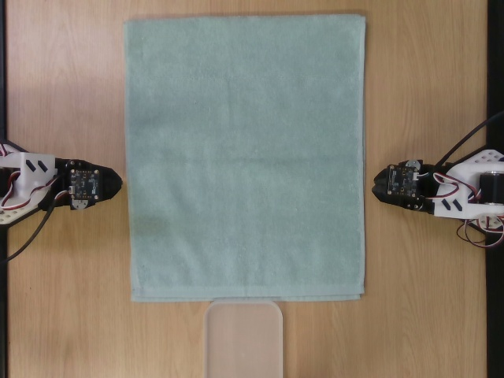
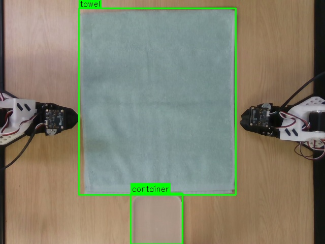
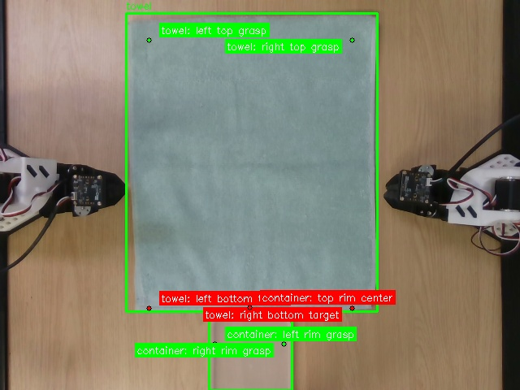
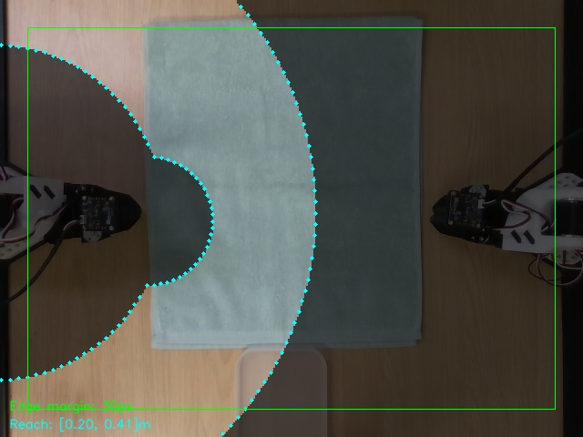
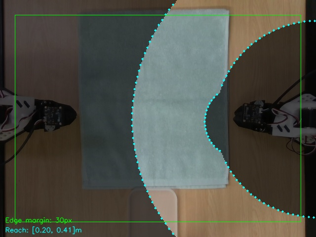
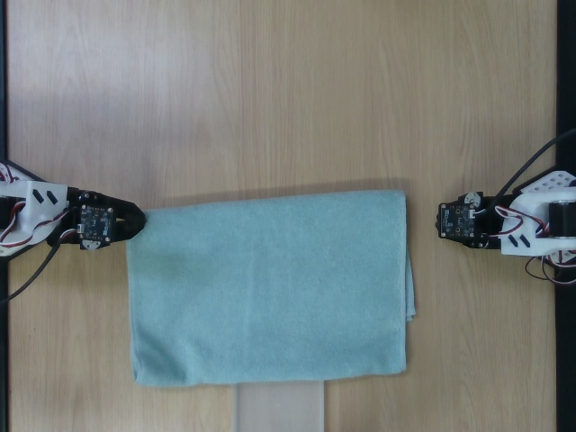

Collecting high-quality robot manipulation data at scale remains a critical bottleneck for training generalizable robot policies. We present RAPIDS, an end-to-end multi-agent system that fully automates the robot data collection pipeline — from natural language task specification to physical execution, evaluation, and dataset recording.
Our system leverages Code-as-Policies (CaP) to translate natural language instructions into executable robot control code via large language models (LLMs). Combined with zero-shot visual grounding (Grounding DINO + RealSense RGB-D), vision-language model (VLM) based task evaluation, and automatic reset execution, RAPIDS enables continuous, autonomous data collection without human intervention.
The system supports both single-arm and bimanual manipulation on SO-101 robot arms, records full trajectories with skill-level subgoal labels in the LeRobot dataset format, and provides a foundation for VLA (Vision-Language-Action) model fine-tuning and sim-to-real transfer.
RAPIDS operates as a closed-loop pipeline that transforms natural language instructions into physical robot actions, automatically evaluates task completion, and resets the workspace for the next episode.
VLM / Grounding DINO
+ RealSense RGB-D
LLM converts NL
to executable Python
Skill primitives
+ IK/FK Control
VLM compares
before/after images
LLM-generated
reset code
Closed-Loop Autonomy: A natural language instruction (e.g., "Pick up the red cup and place it in the blue box") is processed through the full pipeline. The VLM-based judge determines success/failure, and the auto-reset module restores the workspace for continuous data collection — all without human intervention.
The system is organized into four hierarchical layers, from high-level skill abstractions down to direct hardware control. This layered design enables modularity and easy extension to new robots and tasks.
RAPIDS is composed of 6 specialized AI agents, each responsible for a distinct stage of the autonomous data collection pipeline. The agents communicate through a centralized orchestrator that manages the end-to-end workflow.
Converts natural language instructions into structured task specifications with physical feasibility validation.
Dynamically configures simulation environments from task specs with VLM-based suitability verification.
Generates executable robot control code using Code-as-Policies with self-correction via feedback loops.
Heterogeneous robot control framework with ROS integration and robot-specific plugins.
Neuro-symbolic pre-verification and QA-based post-verification for data quality assurance.
Image-based reward functions and VLA fine-tuning for transferring skills from simulation to real robots.
The LLM-generated code calls high-level skill primitives that abstract away low-level motor control. These primitives handle IK solving, trajectory planning, compensation, and safety checks internally.
| Skill | Description | Key Parameters |
|---|---|---|
move_to_position(pos) |
Move end-effector to target [x, y, z] position | position, apply_gripper_offset |
gripper_open() |
Open the gripper | — |
gripper_close() |
Close the gripper to grasp an object | — |
execute_pick(pos) |
Full pick sequence: approach, descend, grasp, lift | position, approach_height |
execute_place(pos) |
Full place sequence: approach, descend, release, retract | position, approach_height |
rotate_90degree(dir) |
Rotate wrist 90 degrees CW or CCW | direction: 1 (CW), -1 (CCW) |
move_to_initial_state() |
Return to calibrated home position | — |
# Example: LLM-generated code for "Pick up the red cup and place it on the tray"
from skills.skills_lerobot import LeRobotSkills
skills = LeRobotSkills(robot_config="robot_configs/robot/so101_robot3.yaml")
skills.connect()
skills.move_to_initial_state()
skills.rotate_90degree(direction=1)
# PICK the red cup
skills.gripper_open()
skills.move_to_position([0.15, 0.05, 0.07], apply_gripper_offset=True)
skills.move_to_position([0.15, 0.05, 0.02], apply_gripper_offset=True)
skills.gripper_close()
skills.move_to_position([0.15, 0.05, 0.07])
# PLACE on the tray
skills.move_to_position([0.22, -0.03, 0.07])
skills.move_to_position([0.22, -0.03, 0.03])
skills.gripper_open()
skills.move_to_position([0.22, -0.03, 0.07])
skills.move_to_initial_state()
skills.disconnect()| Component | Model | Specification |
|---|---|---|
| Robot Arm | SO-101 (Feetech STS3215) | 5-DOF manipulator + gripper, 1MHz serial |
| Camera | Intel RealSense D435 | RGB-D @ 30 FPS, 640x480 |
| Compute | NVIDIA GPU | Grounding DINO + VLM inference |
| LLM Backend | GPT-4o / Gemini / LLaMA / vLLM | Multi-provider support with auto-routing |
Bimanual Configuration:
For dual-arm tasks, two SO-101 arms (Robot 2 & Robot 3) are coordinated through
MultiArmSkills, which provides synchronized parallel execution with
per-arm wait semantics. A shared RealSense camera captures the workspace
between both arms.
Below are example outputs from the RAPIDS pipeline showing the complete flow: workspace detection, object localization, task execution, and VLM-based evaluation.

Initial State
Workspace before execution

Object Detection
VLM-based object localization

Grasp Points
Spatial reasoning & pointing

Left Arm Workspace
Robot 2 operation area

Right Arm Workspace
Robot 3 operation area

Final State
Workspace after execution
The VLM-based task judge compares initial and final states to determine task success, providing detailed reasoning for its TRUE / FALSE / UNCERTAIN verdict.
# Run the full pipeline with a single command
python3 execution_forward_and_reset.py \
--instruction "Pick up the green towel and place it in the white container" \
--robot 2 3 \
--llm gemini \
--record \
--episodes 10
# Or run detection + code generation + judge separately
python3 run_code_gen_with_judge.py \
--instruction "Stack the red block on top of the blue block" \
--objects "red block" "blue block" \
--robot 3 \
--llm openai| Name | Role | Affiliation |
|---|---|---|
| Minjong Yu | Team Lead, Agent 6 | SKKU Software |
| Wookyung Kim | Integration Lead | SKKU Software |
| Soyoung Kim | Agent 2, 6 | SKKU AI Systems Eng. |
| Hyeonseok Cho | Agent 3, 5 | SKKU AI |
| Sihyeong Yoon | Agent 1, 4 | SKKU Software |
| Sanghyeon An | Agent 4, 5 | SKKU Software |
| Seungchan An | Agent 2, 6 | SKKU AI |
@misc{rapids2026,
author = {Yu, Minjong and Kim, Wookyung and Kim, Soyoung and
Cho, Hyeonseok and Yoon, Sihyeong and An, Sanghyeon and An, Seungchan},
title = {RAPIDS: Robot AI Agents Pipeline for Intelligent Data Collection
and Skill Learning},
year = {2026},
note = {2026 AI Co-Scientist Challenge Korea, Track 2},
institution = {Sungkyunkwan University}
}